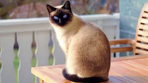

Сіамський кіт
Сіамські коти – одна з найвідоміших і найдавніших порід. Вони відрізняються витонченим тілом, блакитними очима та характерними темними відмітинами на мордочці, вухах, лапках і хвості.
Ці коти досить активні і товариські, вони люблять увагу та можуть бути досить балакучими. У тайській культурі їх вважають символом удачі.